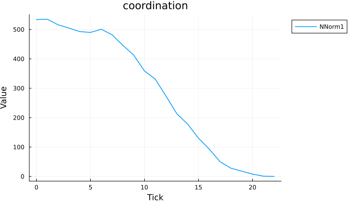
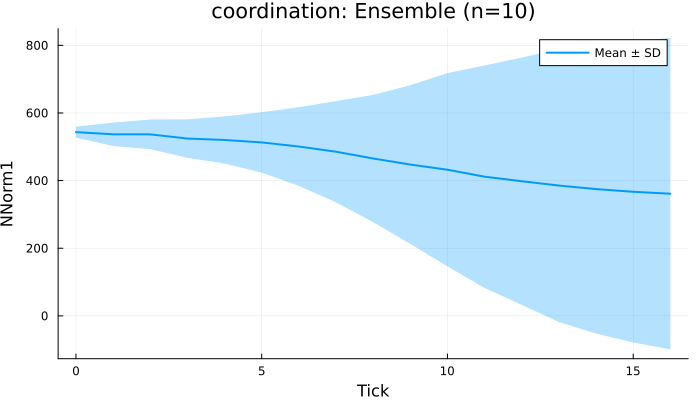
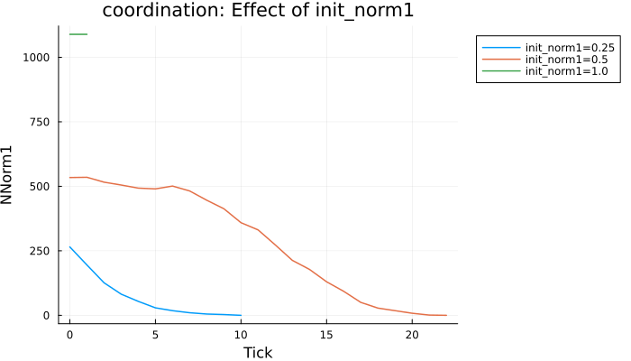

Coordination
Overview
This vignette demonstrates the Coordination model implemented in ArkModelZoo.jl using the Ark.jl ECS framework.
Parameters
| Parameter | Type | Default | Description |
|---|---|---|---|
init_norm1 | Float64 | 0.5 | init norm1 |
coordination_benefit | Float64 | 1.0 | coordination benefit |
grid_size | Int | 33 | 33×33 = (-16,16,-16,16) |
max_ticks | Int | 200 | max ticks |
Source Code
The Julia code to run this model:
using ArkModelZoo
_, trajectory = run_coordination()Time Series

Ensemble Runs
Ten replicates with different random seeds, showing mean ± standard deviation.

Parameter Sensitivity
Varying init_norm1.

Appendix: Source Code
This model is implemented in the Ark.jl Entity-Component-System (ECS) framework. The code is split into five files, each with a distinct role:
- Parameters: a mutable struct holding all configurable values.
- Components: lightweight data types attached to individual entities (agents).
- Resources: world-level shared state accessible to all systems.
- Systems: functions that operate on entities each tick, defining model behavior.
- Model: wiring that assembles the world, registers resources and systems, and provides the run entry point.
Parameters (parameters.jl)
The parameter struct uses @kwdef so that every field has a default value and can be overridden by keyword. These defaults match the original NetLogo model’s slider settings.
Base.@kwdef mutable struct CoordinationParams
init_norm1::Float64 = 0.5
coordination_benefit::Float64 = 1.0
grid_size::Int = 33 # 33×33 = (-16,16,-16,16)
max_ticks::Int = 200
seed::Int = 42
endComponents (components.jl)
Components are lightweight data types attached to individual entities (agents). Mutable structs hold per-entity state, while empty tag structs act as markers for the ECS query system to efficiently filter entities.
# Grid position (fixed, one turtle per patch)
mutable struct CoordPosition
x::Int
y::Int
end
CoordPosition() = CoordPosition(0, 0)
# Norm: true = Norm1, false = Norm2
mutable struct CoordNorm
norm1::Bool
end
CoordNorm() = CoordNorm(false)
# Payoff accumulated each tick
mutable struct CoordPayoff
value::Float64
end
CoordPayoff() = CoordPayoff(0.0)Resources (resources.jl)
Resources are world-level singletons shared across all systems, used for global state and aggregate statistics.
# Running statistics
mutable struct CoordStats
n_norm1::Int
end
CoordStats() = CoordStats(0)Systems (systems.jl)
Systems contain the model logic and execute in a defined order each tick. Each system struct implements either initialize! (run once at setup) or update! (run every tick).
# --- Initialization ---
struct InitCoordSystem <: System end
function initialize!(::InitCoordSystem, world::World)
params = get_resource(world, CoordinationParams)
rng = get_resource(world, RNGResource).rng
stats = get_resource(world, CoordStats)
# One turtle per patch
for x in 1:params.grid_size, y in 1:params.grid_size
is_norm1 = rand(rng) < params.init_norm1
new_entity!(world, (
CoordPosition(x, y),
CoordNorm(is_norm1),
CoordPayoff(0.0),
))
end
# Initial count
n1 = 0
for (_, _, norms) in Query(world, (CoordPosition, CoordNorm))
@inbounds for i in eachindex(norms)
norms[i].norm1 && (n1 += 1)
end
end
stats.n_norm1 = n1
return nothing
end
# --- Calculate Payoffs ---
struct CalcPayoffsSystem <: System end
function update!(::CalcPayoffsSystem, world::World)
params = get_resource(world, CoordinationParams)
# Count norm1 agents
total = 0
n1 = 0
for (_, _, norms) in Query(world, (CoordPosition, CoordNorm))
@inbounds for i in eachindex(norms)
total += 1
norms[i].norm1 && (n1 += 1)
end
end
total == 0 && return nothing
p1 = n1 / total
norm1_payoff = 1.0 + p1 * params.coordination_benefit
norm2_payoff = 1.0 + (1.0 - p1) * params.coordination_benefit
for (_, _, norms, payoffs) in Query(world, (CoordPosition, CoordNorm, CoordPayoff))
@inbounds for i in eachindex(norms)
payoffs[i].value = norms[i].norm1 ? norm1_payoff : norm2_payoff
end
end
return nothing
end
# --- Evolve (Fermi imitation, sequential with immediate updates) ---
struct EvolveSystem <: System end
function update!(::EvolveSystem, world::World)
rng = get_resource(world, RNGResource).rng
# Collect all entity IDs
all_entities = Entity[]
for (eids, _) in Query(world, (CoordPosition,))
append!(all_entities, eids)
end
n = length(all_entities)
n <= 1 && return nothing
# Shuffle for NetLogo-style `ask turtles`
for i in n:-1:2
j = rand(rng, 1:i)
all_entities[i], all_entities[j] = all_entities[j], all_entities[i]
end
# Process each turtle sequentially (immediate updates)
for idx in 1:n
eid = all_entities[idx]
!is_alive(world, eid) && continue
my_norm, my_payoff = get_components(world, eid, (CoordNorm, CoordPayoff))
# Pick a random model from all OTHER turtles
model_eid = eid
while model_eid == eid
model_eid = all_entities[rand(rng, 1:n)]
end
!is_alive(world, model_eid) && continue
model_norm, model_payoff = get_components(world, model_eid, (CoordNorm, CoordPayoff))
# Only consider copying if different norm
model_norm.norm1 == my_norm.norm1 && continue
# Fermi function: probability of copying
prob_copy = 1.0 / (1.0 + exp(-(model_payoff.value - my_payoff.value)))
if rand(rng) < prob_copy
my_norm.norm1 = model_norm.norm1
end
end
return nothing
end
# --- Statistics ---
struct CoordStatsSystem <: System end
function update!(::CoordStatsSystem, world::World)
stats = get_resource(world, CoordStats)
n1 = 0
for (_, _, norms) in Query(world, (CoordPosition, CoordNorm))
@inbounds for i in eachindex(norms)
norms[i].norm1 && (n1 += 1)
end
end
stats.n_norm1 = n1
return nothing
end
# --- Termination ---
struct CoordTerminationSystem <: System end
function update!(::CoordTerminationSystem, world::World)
params = get_resource(world, CoordinationParams)
tick = get_resource(world, Tick)
stats = get_resource(world, CoordStats)
total = params.grid_size * params.grid_size
# Stop if all same norm or max ticks reached
if stats.n_norm1 == total || stats.n_norm1 == 0 || tick.tick + 1 >= params.max_ticks
get_resource(world, Terminate).stop = true
end
return nothing
endModel (model.jl)
The model file assembles all pieces: it creates the ECS World with the required component types, registers resources, builds the Scheduler with systems in execution order, and exposes the public run entry point. The observer pattern records the trajectory each tick.
function coordination_world(; initial_capacity::Int = 2048)
return World(
CoordPosition,
CoordNorm,
CoordPayoff;
initial_capacity = initial_capacity,
allow_mutable = true,
)
end
function coordination_systems()
return (
InitCoordSystem(),
CalcPayoffsSystem(),
EvolveSystem(),
CoordStatsSystem(),
CoordTerminationSystem(),
)
end
function coordination_model(params::CoordinationParams = CoordinationParams())
world = coordination_world()
_add_standard_resources!(world, params)
add_resource!(world, CoordStats())
scheduler = Scheduler(world, coordination_systems())
initialize!(scheduler)
return scheduler
end
struct CoordinationObserver end
function coordination_headers(::CoordinationObserver)
return ["NNorm1"]
end
function coordination_values(::CoordinationObserver, world::World)
stats = get_resource(world, CoordStats)
return Float64[stats.n_norm1]
end
function run_coordination(; params::CoordinationParams = CoordinationParams(), observe::Bool = true)
return _run_model(coordination_model, CoordinationObserver(), coordination_values; params, observe)
end